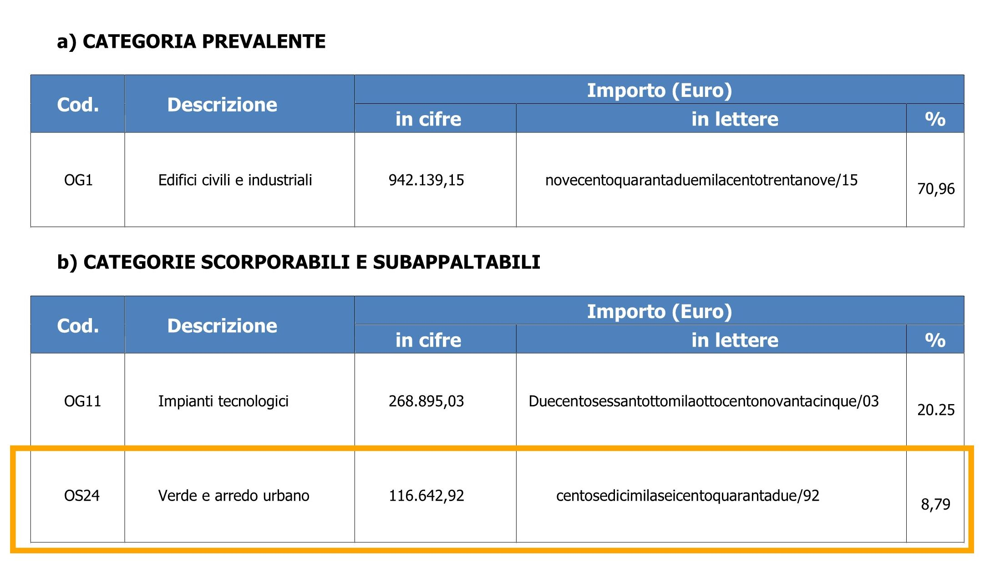

La Villetta Comunale di Siderno
Questa pagina tratta specificatamente dei Lavori in corso che mirano a riqualificare la Villetta Comunale e dintorni tanta cara ai sidernesi.
PREMESSE
Sono stati numerosi gli incontri per valutare l’impatto della “Riqualificazione del Lungomare, della zona fronte Mare e della Villa Comunale della Città Di Siderno†sull’ambiente, percepito ed effettivo. La pubblica amministrazione si è mostrata sempre disponibile, ma per la complessità dei temi abbordati, il tempo è sempre venuto a mancare, interrompendo sistematicamente gli incontri, a volte anche nei momenti più promettenti quando inizialmente sembravano solamente disgressioni esplorative.
La redazione di una pagina web si è naturalmente imposta come soluzione ideale per rendere disponibile a tutti le tematiche abbordate che ciascuno può consultare come e quando meglio crede. Il contenuto è facilmente condivisibili nel caso si ritenesse utile farlo, e rappresenta una opportunità di scovare nuove valide prospettive per valutare meglio il valore aggiunto degli interventi presente e futuri dal punto di vista strettamente ambientale, considerato il ruolo di protagonista indefettibile che il tema riveste nel Piano Nazionale della Riprese e Resilienza.
IL PIANO NAZIONALE DI RIPRESA E RESILIENZA.
L’ambiente è oramai la priorità numero uno in tutte le programmazione a lungo termine ed è importante evidenziare la ratio soggiacente alla programmazione del PNRR; elencando gli obiettivi perseguiti:
- l’adattamento e la mitigazione del cambiamento climatico,
- favorire l’economia circolare,
- prevenire o ridurre l’inquinamento e
- proteggere o ripristinare la biodiversità e gli ecosistemi.
Per raggiungere questi scopi vengono finanziati degli investimenti a condizione che vengono rispettate delle normative di riferimento specifiche per ogni categoria d’investimento. Gli interventi sul verde ricomprendono spesso le seguenti disposizioni generali:
- comunitarie (Natura 2000, Direttive 92/43/CEE “Habitat”, 2009/147/CE “Uccelli”, …),
- nazionali (testo unico ambientale D.lgs 152/06, Criteri Ambientali Minimi DM 63/2020, L.113/192 e successiva L. n. 10/2013 “norme per lo sviluppo degli spazi verdi urbani”) e
- regionali ove applicabili (LR Calabria 56/2019 e 7/2024)
Queste normative sono inderogabili per l’ottenimento del finanziamento. Se per esempio nell’amministrazione ordinaria l’applicazione della legge 10/2013 era discrezionale, diventa obbligatoria nel contesto di un’opera finanziata dal PNRR.
PNRR & LA TUTELLA DEI BENI CULTURALI E DEL PAESAGGIO.
L’intervento di recupero della Villa Comunale poteva attingere a due tipologie d’investimento:
,
- il programma per valorizzare l’identità di luoghi: parchi e giardini storici (missione 1 comparto 3 investimento 2.3),
- il secondo con un progetto di rigenerazione urbana, volti a ridurre situazioni di emarginazione e degrado sociale (missione 5 comparto 2 investimento 2.1)
Il primo, per le qualità che la villetta presentava come giardino storico, sembrava confezionato su misura, purtroppo l’art.6 co.3 dell’avviso pubblico determinava come soggetto ammissibile solo coloro che:
Ai fini dell’ammissibilità saranno ritenuti validi sia i provvedimenti di tutela diretta sul giardino, sia quelli sull’immobile del quale il giardino è pertinenza, purché risulti evidente la sua rilevanza sotto il profilo storico-artistico. Nel caso di beni di cui all’art. 10 comma 1 del D.Lgs. n. 42/2004 non saranno presi in considerazione quelli tutelati ope legis o con procedimento di verifica dell’interesse culturale ai sensi dell’art. 12 del sopracitato decreto legislativo ancora non concluso
In parole povere la villetta ricadrebbe automaticamente sotto la tutela dei beni culturali solo perché realizzata da più di 70 anni e perché di proprietà dello stato e non per motivi qualitativi intrinsechi alla sua peculiarità artistica o botanica, se esistono non sono state ancora ufficialmente evidenziate, attraverso una procedura di valutazione condotta dalla Soprintendenza.
Rimane allora, per finanziare l’intervento, la seconda opzione; il programma riservati ai progetti di rigenerazione urbana. L’opportunità è ottima e probabilmente irrepetibile nel prossimo futuro, l’amministrazione comunale giustamente la coglie ed ottiene così il finanziamento per:
“LA RIGENERAZIONE DEGLI SPAZI URBANI PUBBLICI RICADENTI ALL’INTERNO DEL CENTRO ABITATO DI SIDERNO MARINA *VIA DIVERSE* RIQUALIFICAZIONE AREE VERDI.†Per un importo complessivo di € 1.3 mln (CUP: I15F21000410001 – CIG: 9915740780).
La scheda descrittiva assegnata alla proposta di progetto disponibile sul sito “opencup.gov.it†classifica però tutt’oggi il progetto nella tipologia RESTAURO e nella categoria “VERDE PUBBLICO”.
Se la qualifica di “restauro†abbia una connotazione vincolante e se la categoria “verde pubblico†determina un indirizzo preponderante de perseguire, pare che rimanga sempre l’onere alla stazione appaltante di conservarne le caratteristiche che contraddistinguono la natura stessa della Villa Comunale. In questo caso saggia sarebbe l’osservanza delle prescrizioni contenute nelle LINEE GUIDA E NORME TECNICHE PER IL RESTAURO DEI GIARDINI STORICI curato dall’ APGI - ASSOCIAZIONE PARCHI E GIARDINI D’ITALIA per il Ministero della Cultura. Sono state redatte appositamente per trattare tutti i tipi di parchi e giardini storici, dai più piccoli ai più principeschi, che rientrano nei finanziamenti del primo gruppo, esse contengono preziosi suggerimenti che possono definitivamente applicarsi alla gestione della nostra Villa Comunale, compresi i dettagli di tutte le fasi d’intervento sul verde, e gli eccellenti metodi di diagnostica preliminare indispensabili per un esito di successo.
TUTELLA DEL VERDE URBANO
Un’altra distinzione importante effettuata a monte fra i vari progetti finanziati sono quelli che mirano specificatamente ad una drastica riduzione d’emissione o di concentrazione del diossido di carbonio nell’atmosfera durante la loro fase di esercizio e quelli, simili a quello in oggetto, che non la perseguono attivamente. Per quest’ultimi vige Il “regime 2”. molto più permissivo del regime 1. Tuttavia questo regime impone quantomeno il rispetto del principio di “non arrecare danno significativo†(Do Not Significantly Harm|DNSH) all’ambiente circostante. Tant’è vero che questo aspetto viene chiaramente richiamato dal progettista nella relazione tecnica a p.44 quando citta sia la L. N. 10/2013 “norme per lo sviluppo degli spazi verdi urbani†che le linee guide successivamente ufficializzate dal Ministero dell’Ambiente e della tutela del territorio e del mare nel 2017. Alcuni dei suoi concetti s’incrociano naturalmente con Linee guide dedicate specificamente ai Parchi e Giardini Storici citato precedentemente. Qui appresso si tenta di riassumerne alcuni tra i più significativi in relazione con le opere in itinere condotte presso la Villa Comunale di Siderno.
La tutela del Verde Urbano è quindi resa obbligatoria al momento dell’adesione al programma d’investimento. I principi cardini della pianificazione del verde sono riassunti con l’art. 6 L.10/2013 che prevede:
- il rinverdimento per le nuove costruzione e ristrutturazione edilizia significativa.
- L’incremento, la conservazione e la tutela del patrimonio arboreo per gli edifici esistenti
- La raccolta efficace delle acque piovane, efficienza energetica,
- riduzione effetto isola di calore, formazione del personale addetto ai lavori,
- sensibilizzazione della cittadinanza
mentre l’art.7 estende l’applicazione delle prescrizioni non solo all’albero monumentale ma a tutte le alberature che rispondono ai seguenti criteri:
- alberi ad alto fusto singoli in ambiente naturali o artificiali che presentano caratteristiche fisiche straordinarie oppure caratteristiche storiche culturale rilevanti
- i filari o alberate di particolare pregio paesaggistico, monumentale, storico e culturale, ivi compresi quelli inseriti nei centri urbani
- gli alberi ad alto fusto inseriti in particolari complessi architettonici di importanza storica e culturale, quali ad esempio ville, monasteri, chiese, orti botanici e residenze storiche private.
Eventualmente se si desidera approfondire la tematica, questa pagina riassume l’intervento curato del Dott. Giovani Damiani, chimico e biologo, all’occasione del seminario “ Giardini Storici: la tutela dopo il PNRR ”. Il dott. Damiani ha anche contribuito alla stesura delle “Linee guida e norme tecniche per il restauro dei giardini storici†già ampiamente citato. Le informazioni condivise dalla sua esperienza attrezzeranno adeguatamente il lettore per capire molte delle problematiche di fondo che si affronteranno.
Ad esempio, la pertinenza dell’intervento è stato valutato in funzione del rapporto delle superfici vegetali individuate a terra e di quelle “artificializzate”. Secondo le informazioni da soli questi parametri sono insufficienti a valutarne l’impatto ed il contributo ecologico su un ecosistema complesso. Sono da considerare per il suolo anche il suo intero spessore e le sue qualità agronomiche così come anche il volume, l’estensione e la densità complessiva della canopea.
Per quanto riguarda la preservazione del suolo, edotti delle nozioni elementari presente nel riassunto, si può facilmente intuire perché la pavimentazione in prossimità delle radici dei ficus monumentali sia fortemente sconsigliata; intralcia i meccanismi di scambio tra habitat adiacenti. Ad esempio impedisce l’accumulo naturale di sostanza organica come le foglie autunnali che ricoprono il suolo e migliorano il terreno proteggendolo dagli sbalzi termici e contribuiscono allo sviluppo dei microrganismi quali funghi simbionti e micorrize. Il fenomeno è così flagrante che in alcuni giardini è espressamente vietato l’asportazione di sostanza organica dal terreno così mettere a nudo l’apparato radicale oppure severamente vietarne l’interramento eccessivo con terra vegetale, sono tutti interventi che possono provocare degli squilibri nella rizosfera tali da addirittura distruggere quel microcosmo delicato ed indispensabile per la salute dell’albero, all’immagine del microbiota dell’apparato digestivo dell’essere umano.
Ora possiamo capire perchè persino la premura di utilizzare un vespaio areato (sistema tipo cupolex) per proteggere le radici dell’albero dalle sollecitazioni dovuto al calpestio non controbilancia tutte le contro indicazioni succitate. Anzi se consideriamo il caso straordinario in cui avvenisse per ipotesi una mareggiata: l’acqua salata del mare inonderebbe l’intercapedine d’aria inizialmente sistemata per garantire l’aerazione in tempi normali, in queste precise condizioni eccezionali quanto tempo ci vorrebbe perché le condizioni le condizioni tornassero alla normale in uno spazio confinato.
Tra l’altro questa sistemazione di una pavimentazione rialzata andrebbe a ridurre ancora di più l’altezza libera sotto i rami di questi alberi monumentali già bassi e restrittivi per quanto riguarda l’attività da svolgersi sotto.
Per quanto riguarda la canopea, è la parte più attiva e per noi umani quella più preziosa, sede della fotosintesi, converte il minaccioso diossido di carbonio in ossigeno. Questo processo chimico è fortemente endotermico, l’evaporazione acquea contribuisce al raffrescamento come se fossero operativi dai 5 ai 10 condizionatori d’aria per 20 ore al giorno, senza consumo elettrico. Si può capire l’importanza di questo dato, quanto sia di vitale importanza nel momento in cui si pianifica il taglio, lo spostamento o la potatura dell’intera chioma di un albero! Ne subiscono le gravi conseguenze anche gli alberi vicini rimasti intatti; la zona d’intervento conosce inevitabilmente un aumento di temperatura media. Il fenomeno appare innocuo ma l’efficacia della conversione garantita dalla fotosintesi diminuisce fortemente con l’aumentare della temperatura media circostante, il processo benefico di conversione s’indebolisce, meno fotosintesi, meno evaporazione e a sua volta nuovo aumento di temperature, sono i temuti cicli di feedback positivi nella dinamica dei sistemi, più comunamente chiamati circoli viziosi. Ecco spiegato rapidamente uno dei motivi soggiacente al favorire l’aggregazione del verde pubblico: diventa più resiliente al riscaldamento climatico e sicuramente più piacevole per la cittadinanza.
Alla luce di quanto appena trattato e dall’osservazione della raccolta di fotografie satellitare che ritraccia sommariamente l’evoluzione della canopea della Villa Comunale dal 2010 ad oggi, si osserva una netta diminuzione della stessa, che sia per inasprimento del clima o per manutenzioni inadeguata, o del tutto assente, come più volte specificato da diverse parti, la situazione è purtroppo questa. Ora la domanda è: la riqualificazione proposta rimedia o rinforza questa tendenza?
Per quanto riguarda l’aspetto botanico, la rimozione di alberature circostante porterebbe come altro effetto negativo la forte probabilità che i ficus andassero ad occupare lo spazio “vitale†adesso liberato, estendendo ancora di più i loro rami verso mare o il sole. La chioma mostra già una disimmetria accentuata verso sud. Un estensione maggiore in quella direzione potrebbe esercitare sul tronco, per effetto leva, sforzi tali da deteriorarlo. Oltretutto l’allargamento della chioma ricoprirebbe maggiormente l’area che il progetto prevede di riservare alla scena centrale quando l’altezza disponibile sotto i rami ne limita già la fruizione prima dei lavori. Bisogna tenere conto che quei alberi sono dei ficus tipo magnolioide, alberi sempreverde tra quelli più grandi tra i alberi di fico coltivati, crescono da 22 a 55 metri in altezza e da 21 a 40 metri in larghezza, a ragione di 90 cm in media l’anno, fino ad una venerabile età di 150 anni.
A parere del comitato, per tutti i motivi sopracitati in un ambito di restauro del verde pubblico, così come viene classificato l’intervento nella scheda riassuntiva della proposta finanziata, le alberature avrebbero dovute essere rispristinate. Sulla pagina “Villa Comunale: Genius Loci†sono raccolte delle imagine che ritracciano le trasformazioni apportate al sito. Se erano emerse, a suo tempo, delle valide motivazioni per rimuoverle, era indispensabile oggi individuarne la sussistenza di dette cause, e possibilmente rimediandone oggi le origini per preservare la salute avvenire della Villa. Immaginiamo che il taglio fosse stato reso necessario a causa di patologie o altri impedimenti, queste informazioni costituivano già una base di studio di notevole importanza per assestare o trattare l’ambiente perché potesse finalmente offrire delle condizioni di sviluppo migliori alle parte superstite.
Per tutti questi motivi, il comitato valuta molto negativamente la pavimentazione nei pressi degli alberi monumentali e suggerisce fortemente che non venga eseguita lasciando libera la superficie corrispondente all’estensione delle chiome soprastante.
Per sostenere ulteriormente le nostre tesi, il comitato ha individuato alcuni punti essenziali estrapolati dalle Linee guida per la gestione del verde urbano e prime indicazioni per una pianificazione sostenibile, per ognuno di essi sono evidenziati alcuni motivi, secondo il nostro umile parere, per i quali andrebbe rivisitata la proposta progettuale, ben inteso nel limite del possibile, oppure mettere i suggerimenti a dimora per i prossimi interventi.
I criteri di realizzazione di aree verdi ritenuti più attinente alla presente vicenda sono:
- priorità inserimento nel sistema del verde urbano esistente
- La morfologia del verde urbano esistente, dalla raccolta delle fotografie satellitare degli anni precedenti, è stata profondamente alterata dalla compenetrazione urbana realizzata, gli alberi che componevano il filare frontistante agli alberi monumentali erano stati tagliati persino persino prima del rilievo e sostituti da quelli progettati a ridosso della tribuna nord allontanandoli dalla loro posizione originale all’interno della Villa Comunale.
- Massimizzare accorpamento per evitare frammentazioni e collocazione residuali
- L’aggiunta della vegetazione è stata realizzata principalmente ad isola, distanziate dal fulcro vegetale originario in periferia
- Usi materiali ecocompatibile e riciclati e riciclabile che possono essere facilmente demoliti e riutilizzati o riciclati al termine dell’uso,
- Il cemento armato utilizzato per la costruzione delle tribune non rientra in questa descrizione soprattutto nella fase di remissione, infatti all’inizio del cantiere è stata difficoltosa la rimozione dei blocchi di cemento inseriti dai pregressi interventi, sono dovuti intervenire di grossa potenza col rischio di creare una eccessiva compattazione dele terreno vegetale.
- Biodiversità ; composizioni vegetali miste rispetto a quelle in purezza, utilizzando specie che permettano l’alimentazione e il rifugio per insetti, uccelli e piccoli mammiferi e dell’avifauna
- Sono stati previsti d’inseriti solamente le classiche palme, sarebbe stato auspicabile aggiungere essenze aromatiche per allontanare insetti attratti dalla futura illuminazione per la comodità degli spettatori
- Gestione acque pluviali (vasche, bacini di ritenzione, fossati inondabili)
- Il dimensionamento dell’impianto di recupero dell’acque piovane è stato dimensionato solamente per garantire la gestione delle piogge “di intensità fino a mm 7 che equivale al valore medio nei peridi estivi per la città di Siderno. Superati questi valori limite le acque piovane in esubero verranno smaltite tramite rete comunale delle acque di raccolta pubbliche†(p.7 tav 01.1- Relazione specialistica dei sottosistemi a rete). Quando normalmente il sistema di recupero con le vasche di accumulo andrebbe dimensionato in funzione delle precipitazioni annue, in particolare di quelle più intense, proprio per poterle ridistribuire nei momenti più arridi.
- Gestione suoli: preservare la fertilità del suolo adottando tutte gli accorgimenti per conservare e migliorare le caratteristiche chimiche, fisiche e la componente biologica del terreno;
- analisi del terreno,
- risulta mancante qualsiasi analisi del terreno in merito alle caratteristiche su elencate
- gestione movimenti e accantonamento dei primi strati vegetali del terreno,
- sono assenti indicazioni specifiche sulla gestione dei primi strati vegetali del terreno
- analisi del terreno,
- Rilievo in scala adeguata di tutti gli elementi biotici ed abiotici
- Sono stati rappresentati in pianta solamente gli alberi monumentali escludendo il resto della vegetazione arborea e arbustiva
- Tabella con il calcolo della superficie di copertura arborea, arbustiva e erbacea. Oltre a questo sarà necessario elaborare una stima della copertura arborea a 25 anni dal collaudo.
- Dagli elaborati pubblicati all’albo pretorio non risultano rilevati o indicati questi dati
- Calcolo del fabbisogno idrico annuale stimato
- Mancando i dati precedenti, il fabbisogno non può essere determinato con sufficiente precisione, era anche un dato necessario per il dimensionamento dell’impianto di recupero delle acque piovane citato prima.
Il comitato pensa che sono valutazioni fondate su ragionamenti e dati slegati dall’apprezzamento estetico, e quindi del tutto obbiettivi, che trovano fondatezza nel quadro normativo imposto dal principio cardine “di non recare danni significativi†all’ambiente. Ed è per questo motivo che s’invita la pubblica amministrazione a valutarle attentamente le proposte di variante e trarne gli aspetti migliori, nell’interesse della Villa Comunale e della cittadinanza. La riqualificazione va fatta al meglio delle risorse disponibili, finanziarie, materiali ed intellettuali.
AMMISSIBILITA DI PROPOSTE DI VARIANTE IN CORSO D’OPERA
Diverse volte ci è stato ripetuto l’impossibilità di travolgere un progetto di opere pubbliche approvato e finanziato, tuttavia in passato in alcuni casi di forza maggiore hanno testimoniato l’accoglimento di richieste di variante in corso d’opera, nel momento fossero riuniti determinati requisiti:
- Cantieristico: non comportino un aumento significativo dei costi (15%) o un allungamento eccessivo dei tempi di esecuzione dell’opera
- Motivazione: Le varianti devono essere giustificate da ragioni tecniche, economiche o di pubblico interesse.
- Conformità normativa: Le varianti non devono contravvenire alle normative vigenti, comprese quelle in materia di sicurezza, di tutela ambientale e di diritti dei lavoratori.
- Concorrenza: Le varianti devono essere oggetto di una valutazione comparativa tra le diverse proposte e non devono alterare in maniera sostanziale i termini della gara d’appalto.
- Autorizzazione: Le varianti devono essere approvate dall’ente appaltante e, se necessario, autorizzate dagli organi competenti.
ANALISI DEI COSTI
Nel caso fossero state accettate delle proposte di variante, era necessario individuarne il costo con l’analisi del computo metrico stesso allegato al progetto. Sono state esaminate rapidamente le voci che lo compongono così come quelle dell’elenco prezzi o dell’analisi dei prezzi e del prezzario regionale della regione Calabria 2023, le spese si ripartiscono mediamente così:
|
|
|---|
Il grafico illustra di maniera più immediata la ripartizione dei costi:

Invece dalla documentazione riguardo il contratto di appalto è riportato a p.3 la percentuale approssimativa dei lavori per categoria, una disparità considerevole confermata dalle percentuali documentate:

dal quale emerge accessoriamente che circa solo il 9% delle somme erogate sono dedicate alle opere paesaggistiche (€ 61.000) e arredi (€ 52.000) mentre il restante 91 % alle opere “artificiali”,
Se chiedere un percentuale maggiore per le spese dedicate al verde sarebbe anche legittimo, rimane pur sempre più realistico richiedere quantomeno che lo sviluppo della parte minerale non pregiudichi minimamente su quella parte vegetativa.
Comunque nel caso in cui accogliate le nostre richieste valutandone i benefici sul lungo termine, accessoriamente per recuperare margini di manovra è stato reperito un esubero di spese di circa €130.000,00 in sole due voci, è nel caso non fossero sufficienti, sono stati identificati, prima che fossero gettate le tribune, altre proposte di varianti che potessero allo stesso tempo diminuire alcune voci di spese migliorando anche l’impronta ecologica complessiva del progetto, di seguito una raccolta veloce di suggerimenti emessi durante i vari incontri del comitato:
LE TRIBUNE
Per quanto riguarda la Tribuna Nord, si pensa che le dimensioni potevano essere più contenute, con un raggio minore, un’apertura più ristretta e una gradinata in meno, grazie ai dislivelli che presentava il sito, un integrazione maggiore poteva essere raggiunta. Le alternative a realizzarle piene e monolitiche col cemento armato erano numerose! Vero che ci è stato specificato che il cemento gettato è “green†– tale da dimezzare l’emissione di diossido di carbonio – ma in un contesto naturalistico, materiali sostitutivi di minore impatto ecologico e di più semplice rimozione a fine ciclo sono decisamente tanti, a cominciare dalle semplici gabbionate, per altro già adoperate per il ripristino del lungomare anni addietro, con qualche sapiente accorgimento possono acquistare eleganza quanto basta per discostarsi dalla semantica delle opere di contenimento stradali, cosa che stenta a compiere la scarna tribuna in cemento. In più, nella relazione tecnica si è insistito così tanto sull’idea di unificare gli spazi, il mare e la montagna, prevedendo persino di eliminare il dislivello della carreggiata. Poi da un tratto per quasi la totalità della lunghezza della zona d’intervento si erigono queste tribune per un altezza media di 2.00 m. Come possono persone di altezza media normale (1.80 m) percepire gli spazi dall’altra parte. Per questo scopo l’antica ringhiera in ferro battuto montata sul muretto non più alto del ginocchio aveva maggiore pertinenza.
L’IMPIANTO DI ILLUMINAZIONE
Sicuramente l’impianto d’illuminazione verifica tutti i parametri per la comodità e la sicurezza dei futuri utenti, le schede sul funzionamento delle apparecchiature è dettagliatissima, mancano però le valutazioni riguardo gli effetti e le alterazioni del fotoperiodo che influenza notevolmente lo sviluppo delle piante, i ritmi circadiani dalla fauna e dei cittadini.
È da valutare l’utilità effettiva delle due torri di luce previste in origine per illuminare dall’alto la scena centrale dell’anfiteatro essendo in gran parte coperta dalle chiome degli alberi monumentali centrali che ostacolerebbero la luce proiettata.
L’IMPIANTO D’IRRIGAZIONE
Sono stati suggeriti - l’uso di un sistema d’irrigazione a gocce, - un sistema di nebulizzazione, - delle fontane funzionante, per quanto riguarda la gestione del recupero delle acque sono già stati precedentemente espressi i dubbi sulla capacità dell’impianto progettato con le caratteristiche descritte nella relazione specialistica ad assolvere il suo compito nel modo più efficace.
L’IMPIANTO DI DIFFUSIONE ACUSTICA
L’utenza, come comunità è già inondata da flussi di dati e informazione continui, ci si chiede se non fosse il caso di riservare un’oasi di prossimità dove i cittadini possono estraniarsi momentaneamente. Un posto dove sottrarsi a quello che oggi viene denominato come infotossicazione. Quale ambiente migliore della Villa Comunale, dove un panorama sonoro naturale garantirebbe questa evasione temporanea grazie ad un ecosistema vegetativo naturale vivo, vero e sano (insetti, avifauna, vento nelle foglie, rumore del mare possibilmente privi del rombo dei veicoli), sperando che non capiti mai una “primavera silenziosa†senza l’ausilio di surrogati digitali quando abbiamo la possibilità di avere concretamente il luogo adatto.
I CHIARIMENTI
È stata portata a conoscenza del comitato che:
- Il comitato comunicava che la riqualificazione comportava la diminuzione del 42% di superficie vegetativa sulla base della tavola 7.3 Superficie permeabili durante l’evento del 24 maggio 2024 tenutasi all’YMCA. il R.U.P. l’Ing. Surace ha rimarcato che sono state identifica più dettagliatamente le reali superfici, per natura ed estensione specifiche, nella tavola 7.2.8 non ancora pubblicata al momento dell’incontro. Dal rilievo risulterebbe allora un’estensione ante operam del tappetto vegetale di molto inferiore a quanto indicato nella tavola 7.3. A lavori compiuti come da progetto dovrebbe esserci addirittura un aumento della superficie vegetale finale.
- Sono stati individuati e repertoriati gli alberi monumentali perché godano di tutte le misure di salvaguardia disposte per leggi, e che gli altri esemplari ad alto fusto sono stati trapiantati ove necessario con tutte le dovute cure,
- il cemento adoperato è un cemento rispettoso dell’ambiente in quanto il suo utilizzo emette il 50% in meno di diossido di carbonio e che non sono stati introdotti quantitativi aggiuntivi a quelli rimossi dagli interventi pregressi, al contrario.
- che la pavimentazione utilizzata è fortemente drenante per permettere alle acque di percolare nel terreno soggiacente o di essere raccolte nelle apposite vasche di accumulo.
Il comitato “sasso nello stagno†ha poi rimarcato che:
- Dato che la tavola sarà messa a disposizione per studiarla, ci si riserva di rispondere una volta esaminata con cura. [comunque dal rilievo fotografico le uniche superfici non inverdite sono le rampe e le scale in cemento così come le aere destinate al transito pedonale ricoperte di ghiaia]
- il rilevamento degli alberi monumentali esistenti è sicuramente un’ottima iniziativa, ma che andrebbe integrata con le disposizioni dell’art.7 della L 10/2013 che estende la monumentalità a tutti gli alberi che compongono la vegetazione arborea della villa,
- il cemento più ecologico è quello che non si usa e che c’erano sicuramente soluzioni costruttive che potevano ridurne considerevolmente l’impiego assecondando maggiormente gli obbiettivi fissati dai Criteri Ambientali Minimi (C.A.M.).
- Seppure la pavimentazione drenante può presentare delle permeabilità migliore dei terreni naturali, non possiede sicuramente lo stesso potenziale biologico e costituisce invariabilmente uno strato di isolamento riguardo alcuni processi di scambio (ossigeno, nutrienti, concimi, etc… ) tra habitat contigui soprattutto in prossimità degli apparati radicali appartenenti ai ficus centrali
RASSEGNA STAMPA
{kind=link}
RISSORSE ESTERNE
- La documentazione ufficiale del progetto può essere scaricata dal seguente link
- LEGGE 14 gennaio 2013 , n. 10 Norme per lo sviluppo degli spazi verdi urbani
- Linee guida per la gestione del verde urbano e prime indicazioni per una pianificazione sostenibile
- Linee guida e norme tecniche per il Restauro dei Giardini Storici
- legge regionale del 07 febbraio 2024 riguardo le Norme in materia di valorizzazione delle aree verdi e delle formazioni vegetali in ambito urbano.